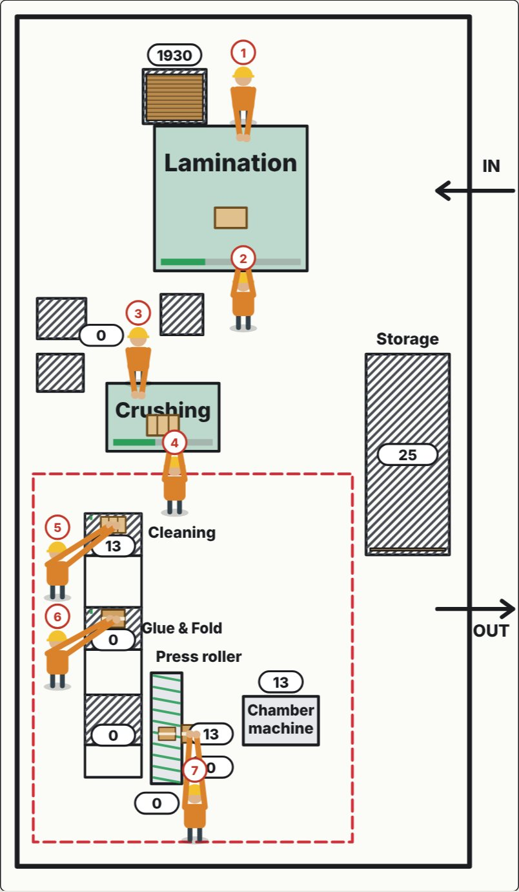

Project 01 · Production improvement
Safety Box Carton Line
A production line making cartons for medical waste. Output was about 2,000 cartons per 8.5-hour shift.
The problem
The line produced about 2,000 cartons per 8.5-hour shift and needed more output. I had to find which stage was holding the whole line back.
The steps
- Timed each production stage with a stopwatch.
- Found the bottleneck stage.
- Built a simulation from the measured times.
- Tested new station layouts and worker tasks in the simulation.
The solution
Re-planned the station layout and the tasks of each worker around the bottleneck, then applied the changes on the floor step by step.
The result
~2,000 → ~3,000cartons per shift, approximately 50% more output, and less waste.

Want to try it yourself? Change the workers and stations and watch the output change.
↑ Try the simulation ↓